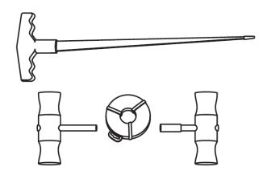
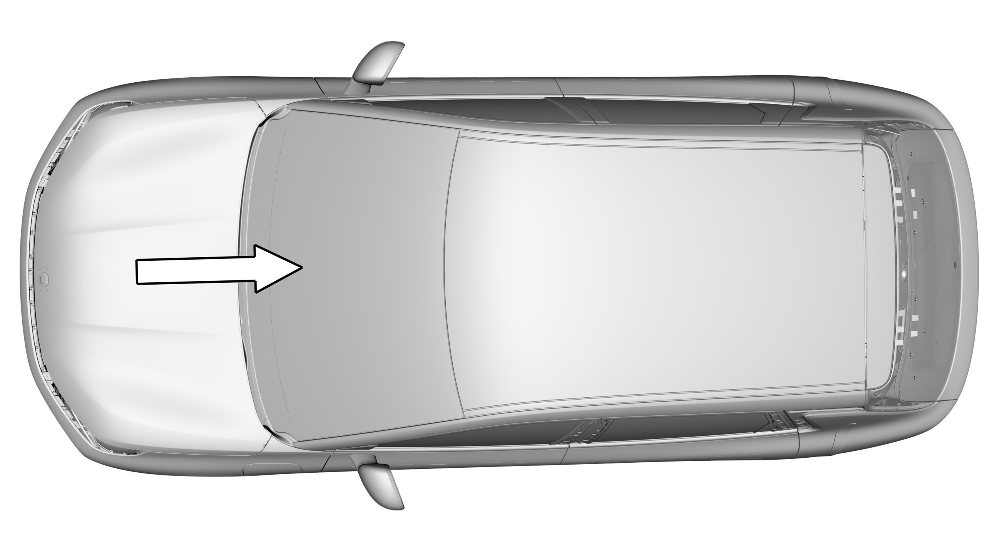
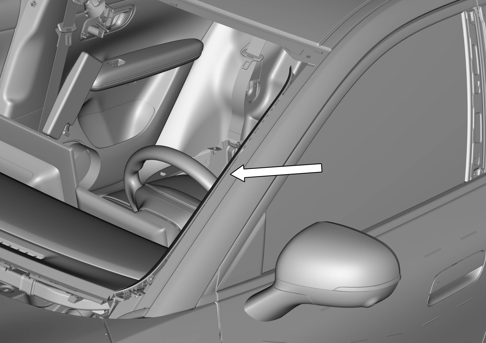
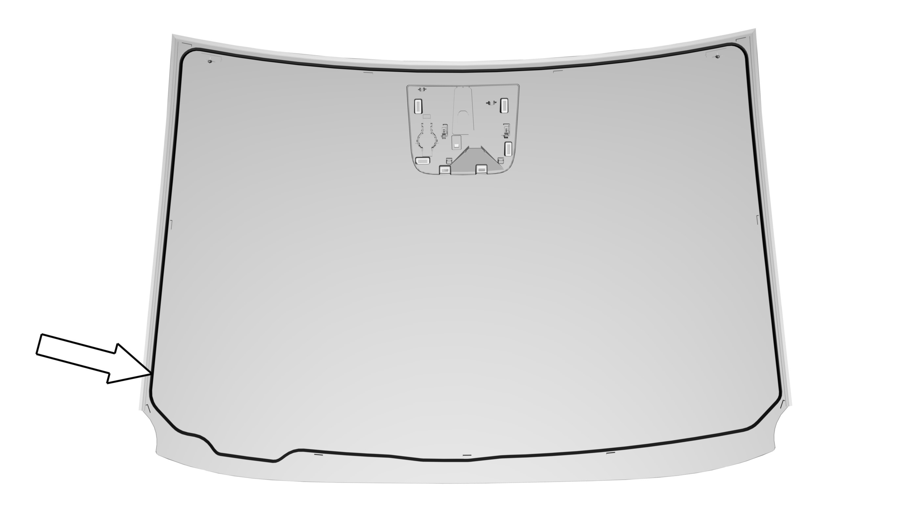

挡风玻璃除胶工具
热风枪
玻璃胶切割器
涂胶枪

如果周围环境温度低于 10 ℃，应将 PU 黏着剂放在暖炉里加热 15 分钟左右或用热风枪加热到 25 ℃左右。
拆卸
断开蓄电池负极线束；
拆卸前罩装饰件及雨刮臂；
参考 前雨刮安装与拆卸
拆卸内后视镜；
参考 拆卸与安装内后视镜
拆卸 A 柱左右饰板；
使用专用工具拆卸前挡风玻璃；
专用工具：挡风玻璃除胶工具
在其它技师的帮助下，用玻璃吸盘拆卸下前挡风玻璃。

使用专用工具的同时应戴上手套及护目镜，因为切割过程中会产生碎片。在切割时应戴上耳塞。如不遵守这些指示，有可能造成人体伤害。
在切割过程中应该小心操作，以免损坏车体或装饰板。
安装
在使用 PU 粘合剂时，应打开车门，避免因车门关闭使车厢内的压力增大而影响粘合效果。
避免接触已清理的表面，这会影响粘合剂的粘合效果。
刮去沟槽及凸缘溢出的多余粘合剂。
清理前挡风玻璃槽凸缘内残余的粘合剂；
焊缝密封区检查被损坏的金属片，铁锈或无关材料等易引起玻璃破损的物质；
将热风枪温度控制在 25 ℃，消除前挡风玻璃槽凸缘及玻璃粘胶条的湿气；
准备好 PU 粘合剂、玻璃及其它附件；
在车体玻璃涂胶线路上均匀涂上一圈玻璃胶底涂，宽度≥18mm，且保证连续；

在前挡风玻璃挤胶路线上均匀涂上玻璃胶底涂，宽度≥12mm，涂胶应均匀且连续；
在前挡风玻璃挤胶路线上均匀挤胶，胶型断面约为7（底）×13（高）的三角形，涂胶应均匀且连续无断开，无气泡，无严重堆胶，涂胶起始点不能在玻璃的R角；

在其他技师的帮助下使用玻璃吸盘安装前挡风玻璃；
如果常温降到 10℃以下，使用热风枪在距表面约 50 mm 处加热 ( 25 ℃ ) 持续 15 min( 在汽车的内部或外部 )；
安装 A 柱左右饰板；
安装内后视镜；
参考 拆卸与安装内后视镜
安装前罩装饰件及雨刮臂；
连接蓄电池负极线束。
为确保粘合剂的使用效果，应消除所有粘合表面的湿气。
均匀按压玻璃各部位，使玻璃与粘合剂充分接合。
安装完成后增加对密封性的检查，如用淋雨进行检查，检查过程中注意对车内进行保护处理